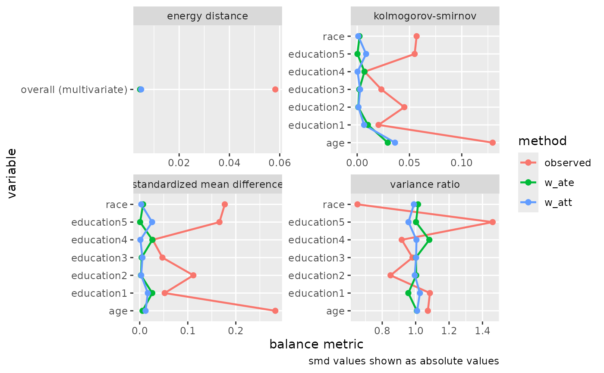
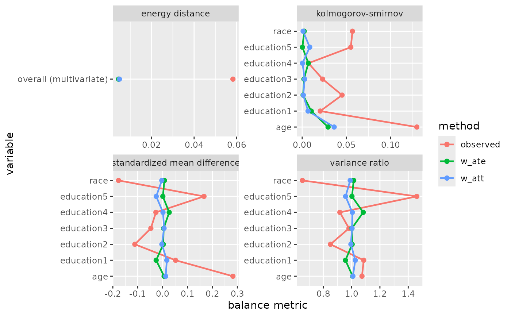
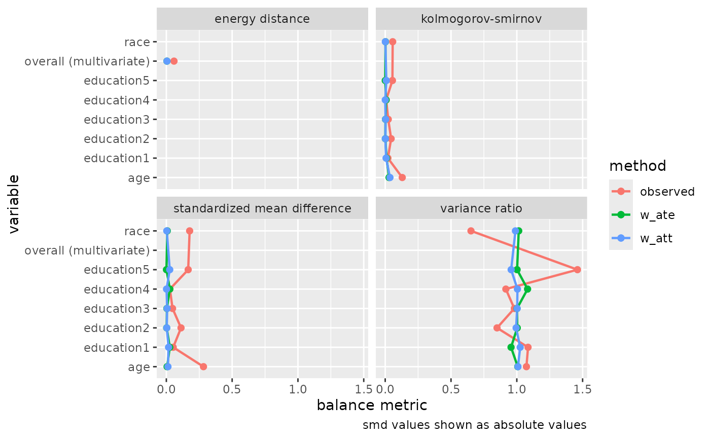
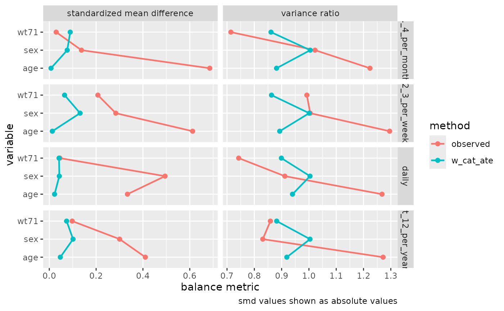

Create a Love plot-style visualization to assess balance across multiple
metrics computed by check_balance(). This function wraps geom_love()
to create a comprehensive balance assessment plot.
Usage
plot_balance(
.df,
abs_smd = TRUE,
facet_scales = "free",
linewidth = 0.8,
point_size = 1.85,
vline_xintercept = 0.1,
vline_color = "grey70",
vlinewidth = 0.6
)Arguments
- .df
A data frame produced by
check_balance()- abs_smd
Logical. Take the absolute value of SMD estimates? Defaults to TRUE. Does not affect other metrics which are already non-negative.
- facet_scales
Character. Scale specification for facets. Defaults to "free" to allow different scales for different metrics. Options are "fixed", "free_x", "free_y", or "free".
- linewidth
The line size, passed to
ggplot2::geom_line().- point_size
The point size, passed to
ggplot2::geom_point().- vline_xintercept
The X intercept, passed to
ggplot2::geom_vline().- vline_color
The vertical line color, passed to
ggplot2::geom_vline().- vlinewidth
The vertical line size, passed to
ggplot2::geom_vline().
Details
This function visualizes the output of check_balance(), creating a plot
that shows balance statistics across different variables, methods, and metrics.
The plot uses faceting to separate different metrics and displays the
absolute value of SMD by default (controlled by abs_smd).
For categorical exposures (>2 levels), the function automatically detects
multiple group level comparisons and uses facet_grid() to display each
comparison in a separate row, with metrics in columns. For binary exposures,
the standard facet_wrap() by metric is used.
Different metrics have different interpretations:
SMD: Standardized mean differences, where values near 0 indicate good balance. Often displayed as absolute values.
Variance Ratio: Ratio of variances between groups, where values near 1 indicate similar variability.
KS: Kolmogorov-Smirnov statistic, where smaller values indicate better distributional balance.
Correlation: For continuous exposures, measures association with covariates.
Energy: Multivariate balance metric applied to all variables simultaneously.
See also
check_balance() for computing balance metrics, geom_love() for
the underlying geom
Other balance functions:
bal_corr(),
bal_ess(),
bal_ks(),
bal_model_auc(),
bal_model_roc_curve(),
bal_qq(),
bal_smd(),
bal_vr(),
check_balance(),
check_ess(),
check_model_auc(),
check_model_roc_curve(),
check_qq()
Examples
# Compute balance metrics
balance_data <- check_balance(
nhefs_weights,
c(age, education, race),
qsmk,
.wts = c(w_ate, w_att)
)
# Create balance plot
plot_balance(balance_data)

# Without absolute SMD values
plot_balance(balance_data, abs_smd = FALSE)

# With fixed scales across facets
plot_balance(balance_data, facet_scales = "fixed")

# Customize threshold lines
plot_balance(balance_data, vline_xintercept = 0.05)
# Categorical exposure example
# Automatically uses facet_grid to show each group comparison
balance_cat <- check_balance(
nhefs_weights,
c(age, wt71, sex),
alcoholfreq_cat,
.wts = w_cat_ate,
.metrics = c("smd", "vr")
)
plot_balance(balance_cat)
